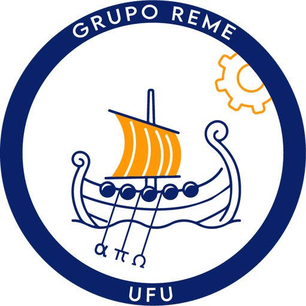
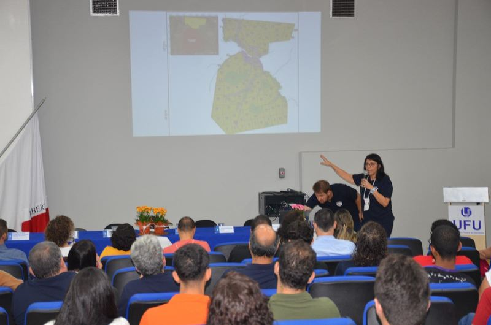
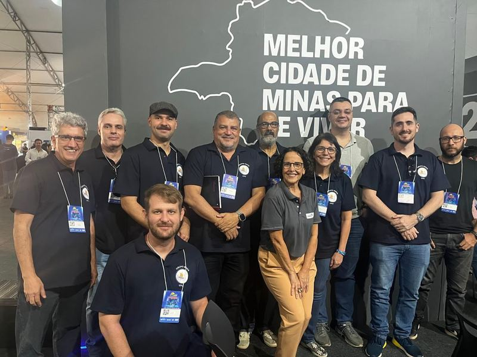

Clientes e mercado
- Previsão de demanda e de vendas
- Definição de preços
- Segmentação e retenção de clientes

O REME (Remodelando sua Empresa com Matemática e Estatística) reúne docentes e estudantes da Universidade Federal de Uberlândia para trabalhar junto com empresas, órgãos públicos e entidades de Uberlândia e região.
Trabalhamos com perguntas que dependem de dados e que uma empresa precisa responder para decidir. Os exemplos abaixo mostram os tipos de problema em que a equipe tem experiência.
Cada projeto começa por uma conversa sobre o problema da empresa. Só depois disso a equipe propõe o que fazer.
A empresa descreve a situação por e-mail e marcamos uma reunião, na UFU ou na empresa.
A equipe estuda os dados e o processo e apresenta uma proposta com escopo, prazo e custo.
Docentes e estudantes constroem e testam os modelos, com reuniões periódicas com a empresa.
A empresa recebe o resultado em forma de relatório, modelo, painel ou sistema, conforme o combinado.
Os projetos com empresas são remunerados. O valor depende da complexidade do problema, da duração e do número de pessoas da equipe envolvidas. Como o trabalho é feito dentro de um projeto de extensão de uma universidade pública, o custo costuma ficar abaixo do de uma consultoria de mercado.
Além dos projetos, o REME promove visitas a empresas, minicursos e workshops, na UFU ou na própria empresa.
Empresas tributadas pelo lucro real podem ter benefício fiscal ao contratar projetos de pesquisa e inovação com universidades públicas como a UFU (Lei nº 11.196/2005, art. 19-A). O enquadramento depende do tipo de projeto e do regime tributário de cada empresa e deve ser avaliado com a contabilidade.
Empresas e instituições que participaram de ações do projeto, como a Oficina REME e o Pitch Reverso.
O REME também é um espaço de formação. Estudantes de graduação e pós-graduação participam dos projetos e da Oficina REME, uma competição em duplas em que os participantes têm dois dias para propor uma solução a um problema real e apresentá-la a uma banca.
A edição de 2025 tratou de risco de incêndio em áreas de reflorestamento. A de 2026 tratou do trânsito de Uberlândia.
Conheça a Oficina REME
Para propor um problema, tirar dúvidas sobre custos ou convidar a equipe para uma visita, escreva para o REME. Conte em poucas linhas qual é a situação e que dados a empresa já tem.
